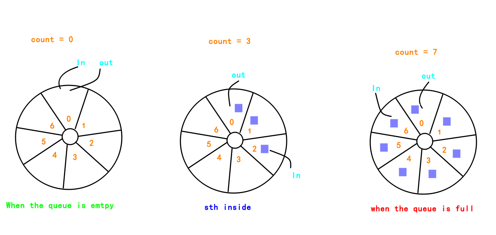
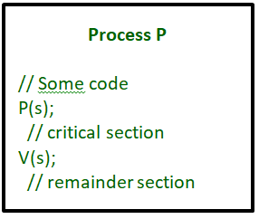

Temporary file.
基本概念 (Basic concepts)
references to the https://www.geeksforgeeks.org/operating-systems/.
1.进程分类
进程同步中的进程分类:
On the basis of synchronization, processes are categorized as one of the following two types:
- Independent Process : Execution of one process does not affects the execution of other processes.
- Cooperative Process : Execution of one process affects the execution of other processes.
Process synchronization problem arises in the case of Cooperative process also because resources are shared in Cooperative processes.
2.临界区问题
Critical section is a code segment that can be accessed by only one process at a time. Critical section contains shared variables which need to be synchronized to maintain consistency of data variables.
In simple terms a critical section is group of instructions/statements or region of code that need to be executed atomically, such as accessing a resource (file, input or output port, global data, etc.).

3.临界区问题解决
Any solution to the critical section problem must satisfy three requirements:
- Mutual Exclusion : If a process is executing in its critical section, then no other process is allowed to execute in the critical section.
- Progress : If no process is in the critical section, then no other process from outside can block it from entering the critical section.
- Bounded Waiting : A bound must exist on the number of times that other processes are allowed to enter their critical sections after a process has made a request to enter its critical section and before that request is granted.
advantages:
- Mutual Exclusion is assured as only one process can access the critical section at any time.
- Progress is also assured, as a process outside the critical section does not blocks other processes from entering the critical section.
- Bounded Waiting is preserved as every process gets a fair chance.
A simple solution to critical section can be thought as shown below,
1 | acquireLock(); |
临界区问题解决-同步机制的实现
为了方便大家理解P53给出的生产者-消费者问题的代码，我用类似画图的工具简单的画了下图:

1. 硬件同步机制
TestAndSet
TestAndSet is a hardware solution to the synchronization problem. In TestAndSet, we have a shared lock variable which can take either of the two values, 0 or 1.
1 | 0 Unlock |
Before entering into the critical section, a process inquires about the lock. If it is locked, it keeps on waiting till it become free and if it is not locked, it takes the lock and executes the critical section.
Question : The enter_CS() and leave_CS() functions to implement critical section of a process are realized using test-and-set instruction as follows:
1 | int test-and-set(int &lock) { |
Test-and-Set解决临界区问题的伪代码可以写成下面这样的:
1 | enter_CS(X); |
In the above solution, X is a memory location associated with the CS and is initialized to 0.
In TestAndSet, Mutual exclusion and progress are preserved but bounded waiting cannot be preserved.
2. 信号量机制(Semaphore)
Semaphores
A Semaphore is an integer variable, which can be accessed only through two operations wait() and signal().
信号量分类
There are two types of semaphores : Binary Semaphores and Counting Semaphores
Binary Semaphores : They can only be either 0 or 1. They are also known as mutex locks, as the locks can provide mutual exclusion. All the processes can share the same mutex semaphore that is initialized to 1. Then, a process has to wait until the lock becomes 0. Then, the process can make the mutex semaphore 1 and start its critical section. When it completes its critical section, it can reset the value of mutex semaphore to 0 and some other process can enter its critical section.
Counting Semaphores : They can have any value and are not restricted over a certain domain. They can be used to control access a resource that has a limitation on the number of simultaneous accesses. The semaphore can be initialized to the number of instances of the resource. Whenever a process wants to use that resource, it checks if the number of remaining instances is more than zero, i.e., the process has an instance available. Then, the process can enter its critical section thereby decreasing the value of the counting semaphore by 1. After the process is over with the use of the instance of the resource, it can leave the critical section thereby adding 1 to the number of available instances of the resource.
Some point regarding P and V operation
- P operation is also called wait, sleep or down operation and V operation is also called signal, wake-up or up operation.
- Both operations are atomic and semaphore(s) is always initialized to one.
- A critical section is surrounded by both operations to implement process synchronization.See below image.critical section of Process P is in between P and V operation.

Using Mutex:
A mutex provides mutual exclusion, either producer or consumer can have the key (mutex) and proceed with their work. As long as the buffer is filled by producer, the consumer needs to wait, and vice versa.
At any point of time, only one thread can work with the entire buffer. The concept can be generalized using semaphore.
Using Semaphore:
A semaphore is a generalized mutex. In lieu of single buffer, we can split the 4 KB buffer into four 1 KB buffers (identical resources). A semaphore can be associated with these four buffers. The consumer and producer can work on different buffers at the same time
Misconception:
There is an ambiguity between binary semaphore and mutex. We might have come across that a mutex is binary semaphore. But they are not! The purpose of mutex and semaphore are different. May be, due to similarity in their implementation a mutex would be referred as binary semaphore.
Strictly speaking, a mutex is locking mechanism used to synchronize access to a resource. Only one task (can be a thread or process based on OS abstraction) can acquire the mutex. It means there is ownership associated with mutex, and only the owner can release the lock (mutex).
Semaphore is signaling mechanism (“I am done, you can carry on” kind of signal). For example, if you are listening songs (assume it as one task) on your mobile and at the same time your friend calls you, an interrupt is triggered upon which an interrupt service routine (ISR) signals the call processing task to wakeup.
3. 管程机制(Monitor)
1.介绍
Monitor is one of the ways to achieve Process synchronization. Monitor is supported by programming languages to achieve mutual exclusion between processes. For example Java Synchronized methods. Java provides wait() and notify() constructs.
- It is the collection of condition variables and procedures combined together in a special kind of module or a package.
- The processes running outside the monitor can’t access the internal variable of monitor but can call procedures of the monitor.
- Only one process at a time can execute code inside monitors.
2.Syntax of Monitor

3.Condition Variables
Two different operations are performed on the condition variables of the monitor.
- Wait.
- signal.
let say we have 2 condition variablescondition x, y; //Declaring variable
Wait operation:
x.wait() : Process performing wait operation on any condition variable are suspended. The suspended processes are placed in block queue of that condition variable.
Note: Each condition variable has its unique block queue.
Signal operation:
x.signal(): When a process performs signal operation on condition variable, one of the blocked processes is given chance.
1 | If (x block queue empty) |